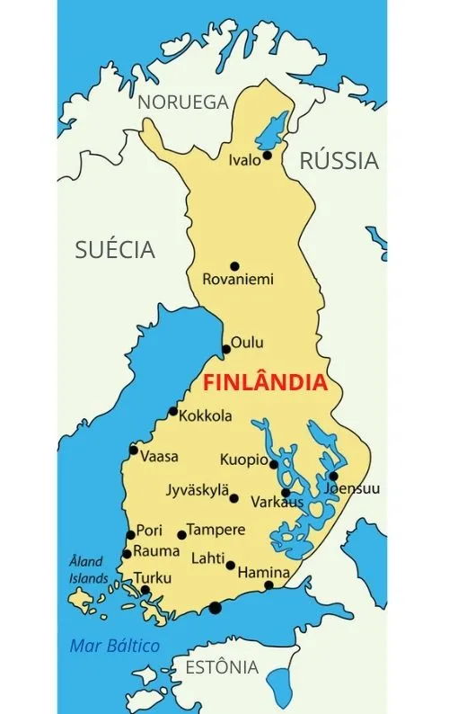
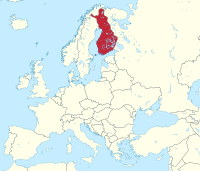

FINLÂNDIA
A Finlândia (em finlandês: Suomi), oficialmente República da Finlândia, é um país nórdico situado na região da Fino-Escandinávia, no norte da Europa. Faz fronteira com a Suécia a oeste, com a Rússia a leste e com a Noruega ao norte, enquanto a Estônia está ao sul através do Golfo da Finlândia. A capital do país e sua maior cidade é Helsinque, em finlandês Helsinki, e a segunda maior cidade é Tampere, localizada a cerca de 180 km a norte da capital. Cerca de 5,3 milhões de pessoas vivem na Finlândia, estando a maior parte concentrada no sul do país.É o oitavo maior país da Europa em extensão e o país menos densamente povoado da União Europeia. A língua materna de quase toda a população é o finlandês, que é uma das línguas fino-úgricas e é mais estreitamente relacionado com o estoniano.
Mapa da Finlândia e suas Principais Cidades
Mapa da Finlândia em Relação a sua Localização na Europa
| Posições | Cidades | Número de Habitantes |
|---|---|---|
| 1º Lugar | Helsínquia | 558.457 |
| 2º Lugar | Espoo | 292.913 |
| 3º Lugar | Tampere | 238.140 |
| 4º Lugar | Vantaa | 233.775 |
| 5º Lugar | Turku | 179.600 |